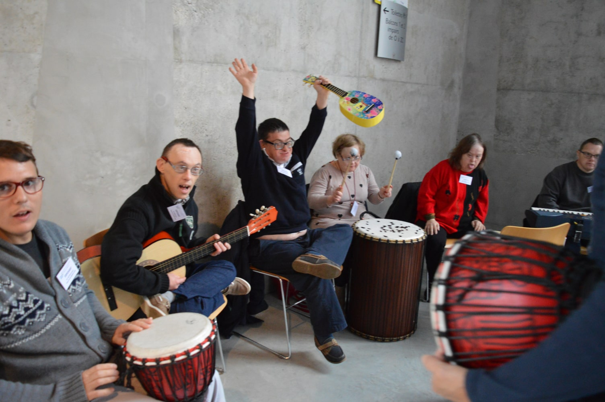

Musicothérapie
Ateliers de musicothérapie
Toute forme d'expression artistique peut être un moyen de communication privilégiée, les personnes en situation de handicap peuvent y trouver des moyens pour exprimer leurs émotions, leurs sensations et leur perception singulière du monde et traduire en sons, en gestes, leur langage personnel.
Par l'utilisation d'instruments de musique en tant qu'objet sonore, de la voix chantée, du récit accompagné d'histoires poétiques, de chansons, le parcours amène naturellement chaque personne à mobiliser toute sa créativité dans un temps de rêverie pendant ces expériences d'improvisations et de découvertes sensorielles.
Lors d'improvisations libres l'erreur n'existe pas, elle est source de rebondissements et favorise le dialogue, comment intégrons nous les sons que nous produisons ou que nous venons d'entendre, à partir de quel moment des petites choses perturbent, dérangent ou bousculent un ordre établi, des conventions, des habitudes ?
Nous entrons à ce moment dans une communication hors normes et l'improvisateur est bien un bricoleur de l'instant.
Si, en création artistique, il y a bien contrainte et sublimation de la contrainte pour parvenir à une vraie liberté dans la création, il y a bien expérience de la maîtrise de soi dans un véritable "lâché prise".
Il existe bien un engagement profond de sa personne et de l'expression de sa culture, de sa singularité dans toute pratique d'improvisation.
Chaque participant peut échanger avec l'autre sereinement, dans l'expression la plus libre qui soit, il peut mettre en commun son langage personnel dans un espace d'expression collective.
Tout au long du parcours d'improvisations chacun prend part à l'activité avec les moyens dont il dispose et s'installe peu à peu dans le plaisir de son expression singulière en l'harmonisant ou pas avec le groupe, en se positionnant ainsi individuellement, chacun fait pleinement état de sa perception singulière du monde et peut l'accorder avec l'autre.
Ces temps d'improvisation invitent naturellement les participants à se laisser bercer dans le dispositif et à laisser libre court à leurs expressions spontanées dans l'instant.
Le temps de la séance est un moment "suspendu", éphémère, c'est un espace désencombrant qui peut laisser certaines traces pouvant être stimulantes dans la perspective d'une mise en mouvement psychique du participant.
"Rencontrer l'autre en se rencontrant soi-même".
Ceci peut synthétiser le fond, la forme et le contenu des ateliers de musicothérapie, il s'agit de permettre à chaque personne de circuler librement, dans sa singularité, à l'intérieur d'un groupe.
Chaque participant est amené à se saisir du dispositif de manière progressive, non dirigée et à sa manière singulière, en s'en emparant peu à peu, dans son propre tempo, en s'y glissant et s'y installant en toute confiance. La notion de prise en compte de la temporalité de chacun des sujets est ici primordiale et constitue le socle des modalités opérationnelles de ces rencontres, c'est ce qui permettra à chacun, tout au long du parcours, de pouvoir accéder à des instants de respiration et de désencombrement psychique. Ceci peut favoriser un soulagement des pressions ressenties par chaque sujet et peut constituer un préalable à tout engagement dans un suivi éducatif et/ou thérapeutique, cet espace peut alors être considéré comme une possibilité de remise en phase du sujet avec lui-même, de repositionnement personnel dans la dimension groupale en maintenant à tout moment pour chacun, une possibilité de retrait simple et fluide à l'intérieur même du dispositif. Il s’agit de stimuler la créativité de chacun dans sa propre perception et dans son expression singulière, par la découverte de plusieurs pratiques artistiques qu'elles soient picturales, corporelles, musicales et sonores, ces propositions n'imposent pas de "bonnes" ou de "mauvaises" façons de faire, elles restent éphémères pour permettre à chacun de pouvoir se détacher de toute production matérielle afin d'avoir la possibilité de ne garder de ces moments créatifs qu'une trace mentale, qui n'appartient qu'à chaque sujet et qui peut être utile et bénéfique à chacun dans le travail de l'après coup. Toutes mes propositions sont ouvertes à l'improvisation et à l'utilisation personnelle que chaque participant peut en faire, ce temps particulier se présente à chacun comme étant un temps d'exception, un temps « suspendu » qui peut avoir valeur de « tremplin », de « passerelle » vers et en lien avec d'autres formes de prises en charge, qu'elles soient éducatives ou médicales.
La poésie, l’expression artistique, viennent souligner le caractère asymétrique possible dans les échanges humains, pour moi ces disciplines portent en elles ce « pas de côté » que nous avons à faire pour rencontrer une personne dans sa singularité, elles font état de ce qui existe dans une dimension qui serait comme une « entre-chose », comme dans ce que signifie « lire entre les lignes » d’un livre, dans ce que vient dire "Ars" (habileté à faire avec) dans le mot Art, elles évoquent la possibilité d'introduire la dimension métaphorique dans le langage, elles invitent au songe et à la rêverie. La poésie vient redonner souffle et mouvement à ce qui tend à se figer, à s'endurcir et à se fermer, elle combat la formation de matière inerte dans la psyché, l’expression artistique permet d’emprunter des chemins de traverse, de vivre des aventures sensorielles et émotionnelles non normées, non identifiées, éphémères et non figées qui peuvent permettre une « remise en mouvement de la psyché » sans contraindre le sujet mais au contraire en l’accueillant pleinement dans sa pure singularité.
La musique est un langage universel, accessible à tous. Toute forme d’expression artistique représente en soi un moyen de communication privilégié.
Favoriser l’éveil, le bien-être, le développement de la créativité des personnes par la pratique musicale.
- Favoriser et soutenir la créativité et l’expression de chacun.
- Valoriser l’estime de soi et la confiance en soi.
- Faciliter et encourager les liens sociaux.
- Favoriser les moments d’échange et la cohésion de groupe.
- Développer les capacités sensorielles.
- Stimuler la perception auditive et l’utilisation de la voix chantée.
- Proposer des jeux d’improvisation musicale, amener à traduire les émotions, les sensations, par la production de sons et de « gestes musicaux », inviter à échanger librement, à partager les expérimentations et découvertes dans l’expression musicale.
- Mettre en commun son langage singulier dans forme expressive collective.
Initiation et sensibilisation aux rythmes et à l’harmonie naturelle par la pratique instrumentale, en abordant l’instrument en tant qu’« Objet sonore ».
- Voix
- Instruments de percussions à peaux tendues
- Xylophones
- Vibraphone
- Guitares
- Piano
- Accessoires sonores